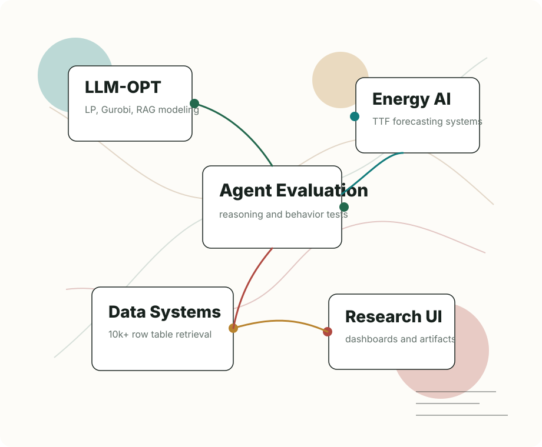

National University of Singapore
Research Assistant, Industrial System Engineering & Management. Advisor: Professor Qin Hanzhang.
NUS Research Assistant · LLM optimization · multi-agent systems
我是 Lu Yuhang，目前在 National University of Singapore 从事研究助理工作， 研究方向包括 LLM 自动优化建模、多智能体推理评测、RAG 工具链、大规模表格数据建模与能源市场预测。

Selected research
Research style
把自然语言任务转成清晰的优化模型、benchmark、指标和可复现实验设计。
用 RAG、prompt engineering、agent orchestration、Gurobi 和可视化界面形成完整链路。
输出 LP/Gurobi 代码、实验 trace、Excel 汇总、Streamlit dashboard 和论文级结果分析。
Education
Research Assistant, Industrial System Engineering & Management. Advisor: Professor Qin Hanzhang.
Master, Industrial System Engineering & Management. Coursework includes Applied Programming, Stochastic Models, Supply Chain, Data Analytics and Statistics.
Bachelor, Science and Technology of Human Settlements. GPA 3.65/4.0, rank 2/22.
Exchange, Urban Planning and Environment Data Analysis. Courses include Geospatial Technologies, R Programming and Applied Time Series Analysis.
Awards & invention
National University Student Social Practice and Science Contest on Energy Saving & Emission Reduction. Built large-scale experimental platform, processed data and led visual presentation.
National Undergraduate Innovation and Entrepreneurship projects, covering chemistry education applet, intelligent desert management, and underwater energy harvesting systems.
Environmental energy invention for ocean current energy capture through piezoelectric and thermoelectric devices for deep-sea exploration scenarios.
Open to collaboration